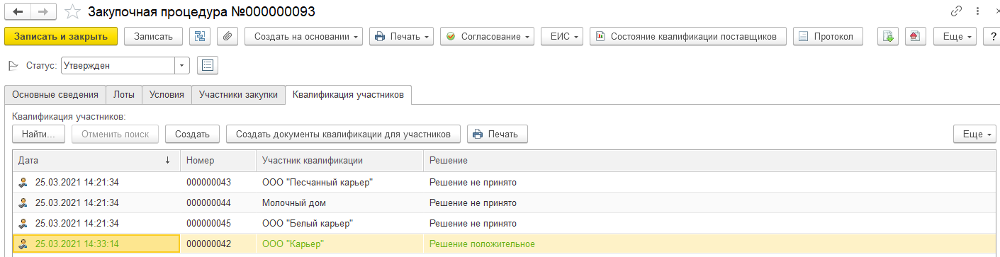
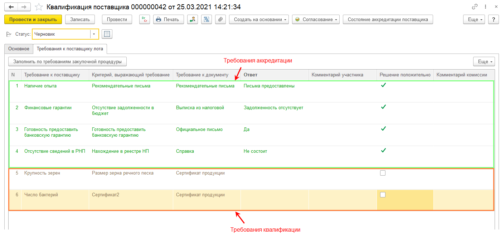

Предназначен для проверки документов предоставленным участником квалификации на соответствие требованиям квалификации. В шапке документа регистрируется решение квалификационной комиссии по участнику, а табличная часть содержит требования аккредитации и квалификации.
|
Графическая схема справки |
Документ создается командой "Создать документы квалификации для участников" с закладки "Квалификация участников" документа "Закупочной процедура" на стадии "Квалификационный отбор". Также документ может быть создан и заполнен из личного кабинета поставщика самим участником. В этом случае участник самостоятельно заполняет данные документа, прикладывает подтверждающие документы и отправляет на проверку. Проверку документа выполняет пользователь, входящий в состав комиссии по квалификации.

В момент создания документ автоматически получает статус аккредитации участника и заполняется требованиями аккредитации и квалификации. Если участник является аккредитованным поставщиком организации, то данные на соответствие требованиям аккредитации заполняются автоматически по проведенной ранее процедуре. Требования аккредитации подсвечены зеленым цветом. Аккредитованным участникам необходимо подтвердить только требования квалификации. Неаккредитованным необходимо подтвердить все требования по документу квалификация.

После заполнения документ отправляется на проверку. Принятое решение фиксируется на закладке Основное - Решение. На закладке Комиссия по квалификации отражаются члены комиссии, ответственные за проверку данных и принятое решение. Данная закладка доступна только пользователю системы и не доступна внешнему пользователю. Документ может быть подключен к системе согласования и проходить согласование по заданному пользователем маршруту.
К дальнейшим шагам процедуры (сбор предложений участников) допускаются только участники, подтвердившие квалификацию. То есть имеющих положительное решение по документу квалификации.